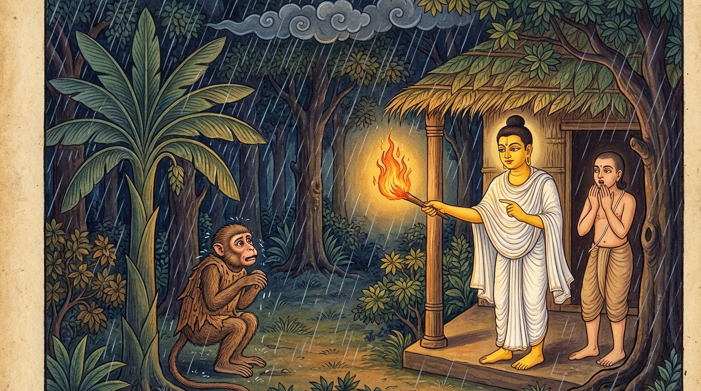

3. මක්කට ජාතකය (173)
“තාත මාණවකො එසො” (පියාණෙනි! මේ මානවකයා) යන මෙම ධර්ම දේශනාව බුදුරජාණන් වහන්සේ ජේතවනාරාමයෙහි වැඩවසන සමයෙහි එක්තරා කුහක (ගුණ නැතිව ගුණ ඇති බව පෙන්වන) භික්ෂුවක් අරභයා දේශනා කළ සේක. මීට අදාළ කථා පුවත ප්රකීර්ණක නිපාතයේ උද්දාලක ජාතකයෙහි (ජාතක අංක 487) මතු සඳහන් වන්නේය. එකල්හි භාග්යවතුන් වහන්සේ, “මහණෙනි, මේ භික්ෂුව කුහක වූයේ දැන් පමණක් නොවෙයි; පෙරත් වඳුරෙක්ව ඉපිද ගිනි තැපීම සඳහා කුහකකම් කළේ යැ” යි වදාරා අතීත කථාව ගෙනහැර දැක්වූ සේක.
පෙර බරණැස් නුවර බ්රහ්මදත්ත රජු රාජ්ය කරන සමයේ බෝධිසත්වයන් වහන්සේ කාසි රට එක් ගමක බමුණු කුලයක ඉපදී, වැඩිවියට පත්ව තක්සලා නුවරින් ශිල්ප ඉගෙන අවුත් ගෘහ ජීවිතයට ඇතුළත් වූ සේක. ඉක්බිති ඔහුගේ බැමිණිය එක් පුතෙකු බිහිකර, ඒ පුතා දුව පැන ඇවිදින වයසේදීම මිය ගියාය. බෝධිසත්වයන් වහන්සේ ඇගේ අවමඟුල් කටයුතු සිදුකොට, “දැන් මට ගිහිගෙයි වාසය කිරීමෙන් ඇති ඵලය කුමක්ද? පුතා රැගෙන ගොස් පැවිදි වන්නෙමි” යි සිතා, හඬා වැටෙන නෑ මිතුරු පිරිස අතහැර දමා තම පුතා ද රැගෙන හිමාල වනයට පිවිස තාපස පැවිද්ද ලබා එහි වන මුල් හා පළතුරු ආහාරයට ගනිමින් වාසය කළහ. උන්වහන්සේ එක් වැසි දිනයක වැස්ස වසින කල්හි අරටු සහිත දර දල්වා ගිනි තපිමින් ලෑල්ලක් මත වැතිර සිටි සේක. මොහුගේ පුත් තාපස කුමරා ද පියාගේ පා සම්බාහනය කරමින් වාඩි වී උන්නේය.
ඉක්බිති එක් වන වඳුරෙක් සීතලෙන් පීඩා විඳිමින් සිටින අතර, තාපසයාගේ අසපුවේ ඇති ඒ ගිනි ගොඩ දැක මෙසේ සිතුවේය: “ඉදින් මම මෙහි ඇතුළු වුවහොත්, ‘වඳුරෙක් වඳුරෙක්’ යයි කියා මට ගසා එළවා දමනු ඇත; එවිට ගිනි තපින්නට නොලැබෙයි. දැන් මට උපායක් ඇත. තවුස් වෙස් ගෙන ඒ ව්යාජයෙන් අසපුවට ඇතුළු වෙමි.” මෙසේ සිතා මියගිය එක් තවුසෙකුගේ වැහැරි සිවුරු ඇඳගෙන, පලතුරු නෙළන කූඩය සහ කෙක්ක ද ගෙන, අසපු දොරටුව අසල තල් ගසක් ඇසුරු කොට ගුලි වී සිටියේය. තාපස කුමරා ඔහු දැක වඳුරෙකු බව නොදැන, “එක් මහලු තවුසෙකු සීතලෙන් පීඩා විඳ ගිනි තපින්නට එන්නට ඇතැයි” සිතා පියාට ඒ බව දන්වා, “මොහු පන්සල තුළට කැඳවා ගිනි තපින්නට සලස්වන්නෙමි” යි අදහස් කොට පියා අමතා මෙම පළමු ගාථාව ප්රකාශ කළේය.
“පියාණෙනි! මේ මාණවකයා තල් ගස මුලට වී සිටියි. අපගේ මෙම අසපුවෙහි ඉඩකඩ ඇත. එබැවින් මොහුට ද අපගේ අසපුවෙහි ඉඩක් දෙමු.”
එහි මාණවකො එසො යනු සත්ත්වයෙකුට නමකි. එහෙයින් ‘පියාණෙනි! එක් තරුණ සත්ත්වයෙකි, එක් තවුසෙකි’ යයි හඳුන්වා දෙයි. තාලමූලං අපස්සිතො යනු තල් ගසක් ඇසුරු කොට ඊට හේත්තු වී සිටින බවයි. අගාරකඤ්චිදං අත්ථි යනු ‘අපගේ මේ පැවිදි ගෙය (පන්සල) ද ඇත’ යනුවෙන් පන්සල ගැන කියයි. හන්දා යනු පරිත්යාග කිරීමේ අර්ථය ඇති නිපාතයකි. දෙමස්සගාරකං යනු මොහුට එකත්පසෙක විසීම පිණිස අසපුවෙන් ඉඩ දෙමු යන්නයි.
බෝධිසත්වයන් වහන්සේ පුතාගේ වචනය අසා නැගිට අසපු දොරටුවෙහි සිට බලන්නේ, ඔහුගේ වානර භාවය හඳුනාගෙන, “දරුව! මිනිසුන්ට නම් මෙබඳු මුහුණක් පිහිටන්නේ නැත. මොහු වඳුරෙකි. එබැවින් මොහු ඇතුළට නොකැඳවිය යුතු යැ” යි පවසා මෙම දෙවන ගාථාව වදාළ සේක.
“දරුව! මොහු ඇතුළට නොකැඳවන්න. මොහු අපගේ අසපුව අපවිත්ර කරන්නේය. සිල්වත් බමුණෙකුගේ මුහුණ මෙබඳු වන්නේ නැත.”
එහි දූසෙය්ය නො අගාරකං යනු ‘මොහු මෙහි ඇතුළු වුවහොත් අප විසින් මහන්සියෙන් තනාගත් මේ පන්සල ගින්නෙන් හෝ දවාලන්නේය; නැතහොත් මල මූත්රා කිරීමෙන් හෝ අපවිත්ර කරන්නේය’ යන්නයි. නෙතාදිසං යනු සිල්වත් බමුණෙකුගේ මුහුණ මෙබඳු නොවේ; මොහු වඳුරෙක් යැයි කියා බෝධිසත්වයන් වහන්සේ එක් ගිනි පෙනෙල්ලක් අතට ගෙන “මෙහි සිටින්නේ කුමටදැ?” යි විමසා එය දමා ගසා ඌ පලවා හැරියේය. වඳුරා වැහැරි සිවුරු ඉවත දමා ගසකට නැග කැලෑවට වැදුණේය. බෝධිසත්වයන් වහන්සේ සතර බ්රහ්ම විහරණ වඩා මරණින් මතු බ්රහ්ම ලෝකයෙහි උපන් සේක.

බුදුරජාණන් වහන්සේ මෙම ධර්ම දේශනාව ගෙනහැර දක්වා ජාතක කථාව නිමා කළ සේක. “එකල්හි වඳුරා වී උපන්නේ මේ කුහක භික්ෂුවයි. තාපස කුමාරයා වූයේ රාහුල තෙරණුවන් ය. තාපසයා වනාහි මම ම වූවෙමි” යි වදාළ සේක.
තුන්වන වූ මක්කට ජාතක වර්ණනාවයි.